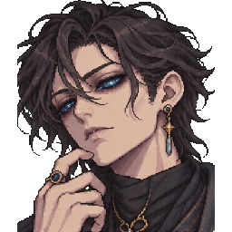
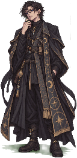

Peren Kerrhylon — identidade visual oficial
Visual aprovado pelo criador, derivado do ZIP original. Esta é uma bancada de inspeção da arte, não um segundo modo de jogo.

Retrato do protagonista
Corpo inteiroSprites em quatro direções
Frente
Esquerda
Direita
Costas
AUDITORIA V2: câmera/escala/posição dos pés estabilizadas; cores originais preservadas. Há caminhada lateral e movimento de capa visto por trás. Frente sem passos e gestos de interação, coleta, ferimento, magia ou ataque são quadros estáticos intencionais até recebermos sprites próprios. Nada disso representa uma animação nova aprovada.
Preparando atlas...